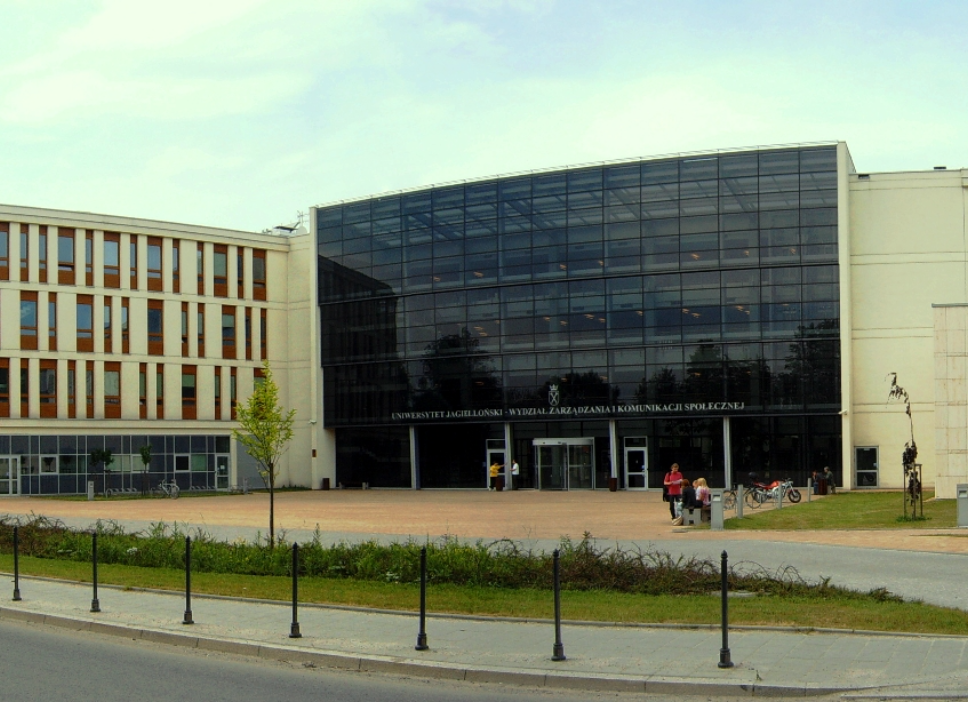
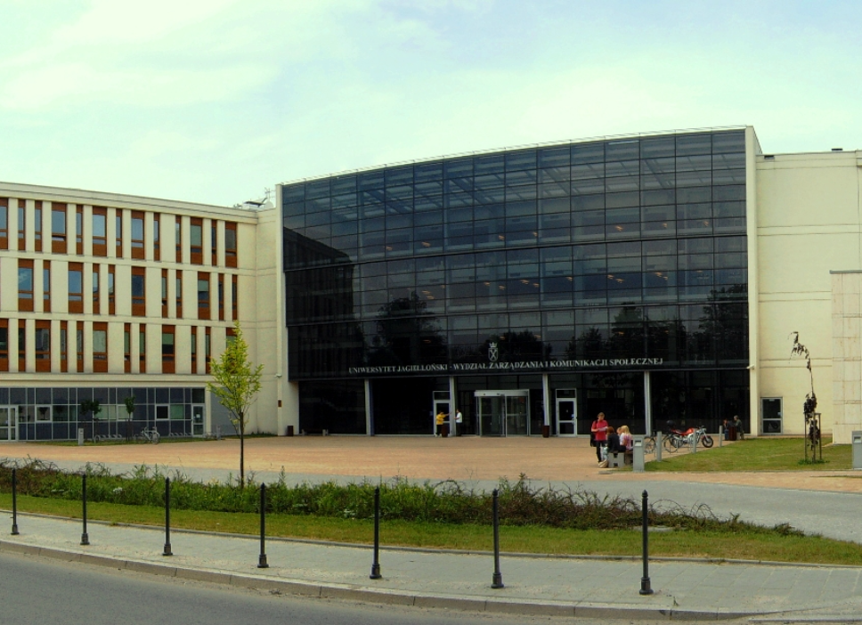

Wydział Zarządzania i Komunikacji Społecznej UJ
Wydział Zarządzania i Komunikacji Społecznej Uniwersytetu Jagiellońskiego w Krakowie to
nowoczesna jednostka akademicka, która kształci specjalistów w dziedzinach zarządzania,
komunikacji, mediów oraz kultury. Powstał jako odpowiedź na rosnące zapotrzebowanie na
ekspertów, którzy łączą wiedzę z zakresu nauk społecznych z praktycznymi umiejętnościami.
Wydział oferuje szeroki wachlarz programów studiów i specjalizacji, odpowiadających na
współczesne wyzwania rynku pracy. Studenci mogą rozwijać swoje umiejętności w dynamicznym
i inspirującym środowisku, pod opieką doświadczonych wykładowców i praktyków.
Wydział Zarządzania i Komunikacji Społecznej UJ współpracuje z licznymi instytucjami w Polsce
i za granicą, wspierając innowacje oraz wymianę wiedzy w dziedzinach zarządzania i komunikacji.
Jest to miejsce, które łączy teorię z praktyką, otwierając przed studentami wiele ścieżek kariery.
 
